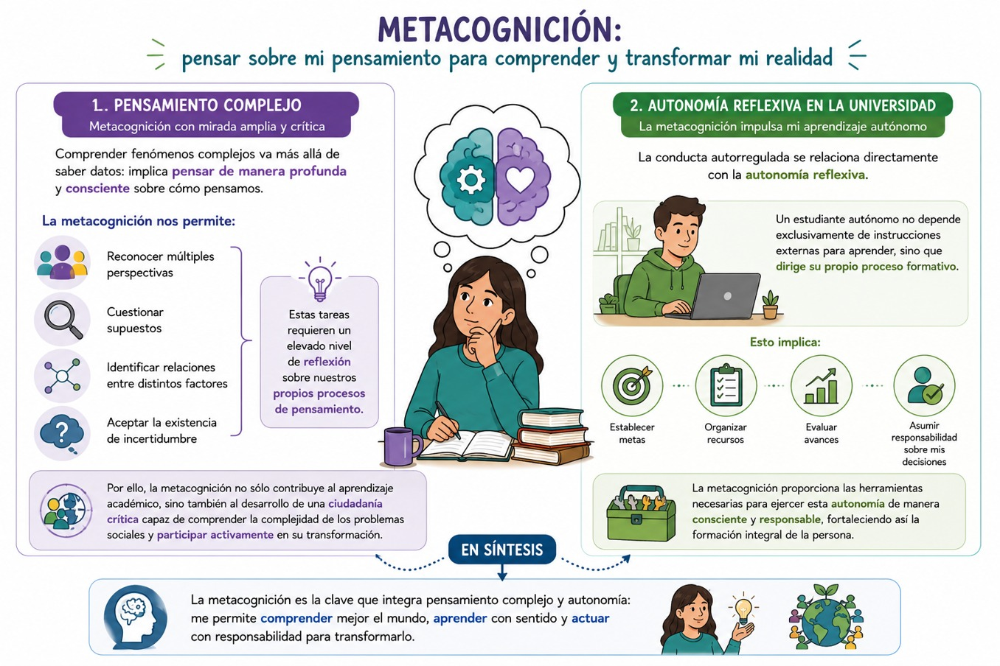
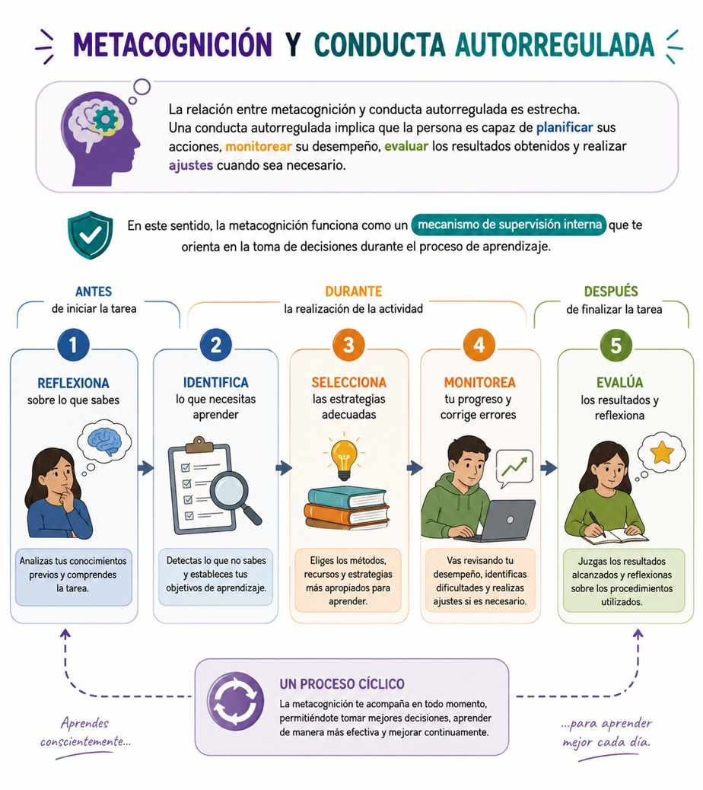
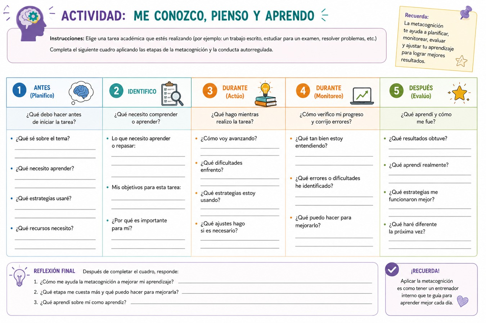
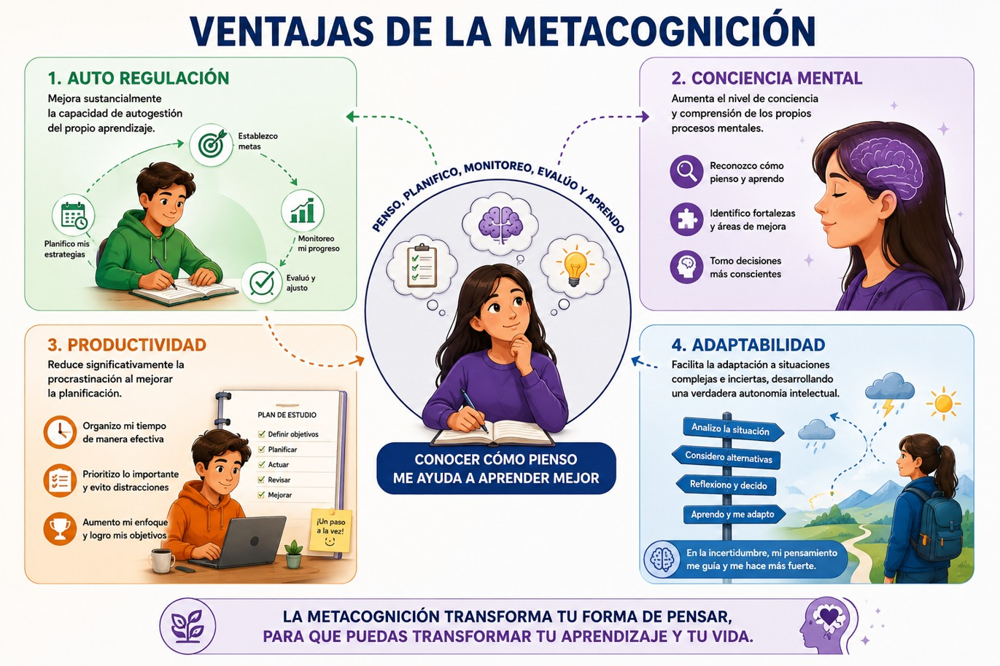
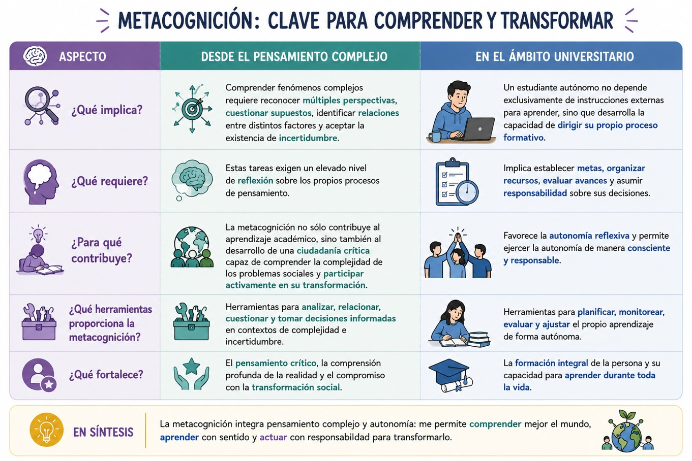

Ahora vamos a revisar qué es la metacognición y su relación con la conducta autorregulada para el aprendizaje a fin de que reconozcas de qué manera estás aprendiendo y aprehendiendo, así como las formas en que podrías mejorar tus conductas para el aprendizaje. La metacognición constituye uno de los procesos más importantes para el aprendizaje de alto nivel, ya que te permite tomar conciencia de cómo piensas, cómo aprendes y cómo resuelves problemas. De manera general, la metacognición puede definirse como la capacidad de conocer, analizar, supervisar y regular los propios procesos cognitivos. Eso significa que no se trata únicamente de adquirir conocimientos, sino de comprender cómo los adquieres, qué estrategias te resultan más eficaces y de qué manera pueden modificarse para que alcances mejores resultados. Según Larraz Rábanos (2015), la metacognición implica un proceso de pensamiento autorregulado y estratégico que permite al individuo controlar conscientemente su aprendizaje y adaptar sus acciones a las exigencias de cada situación.
La relación entre metacognición y conducta autorregulada es estrecha. Una conducta autorregulada implica que la persona es capaz de planificar sus acciones, monitorear su desempeño, evaluar los resultados obtenidos y realizar ajustes cuando sea necesario. En este sentido, la metacognición funciona como un mecanismo de supervisión interna que te orienta en la toma de decisiones durante el proceso de aprendizaje. Antes de iniciar una tarea, deberás reflexionar sobre lo que sabes, identificarás lo que necesitas aprender y seleccionarás las estrategias adecuadas para ello; durante la realización de la actividad monitorearás su progreso y corrige errores; finalmente, evalúas los resultados alcanzados y reflexiona sobre los procedimientos utilizados.
Larraz Rábanos (2015) señala que las estrategias metacognitivas están presentes antes, durante y después de la resolución de problemas. Antes de actuar intervienen procesos de planificación y predicción; durante la actividad se desarrollan mecanismos de regulación y control; y al finalizar se ponen en marcha procesos de verificación y evaluación. Estas habilidades permiten que el aprendizaje deje de ser una actividad pasiva para convertirse en un proceso consciente y deliberado de construcción de conocimiento.
La importancia de la conducta autorregulada resulta especialmente evidente en contextos caracterizados por la complejidad y la incertidumbre. Como hemos visto, los problemas contemporáneos rara vez presentan soluciones únicas o procedimientos claramente establecidos. Por ello, necesitas desarrollar capacidades para gestionar información diversa, evaluar críticamente alternativas, adaptarte a cambios inesperados y aprender continuamente. La autorregulación favorece precisamente esta capacidad de adaptación porque te permite modificar estrategias cuando las circunstancias cambian y aprender de la experiencia acumulada.
Desde la perspectiva del pensamiento complejo, la metacognición adquiere una relevancia adicional. Comprender fenómenos complejos exige reconocer múltiples perspectivas, cuestionar supuestos, identificar relaciones entre distintos factores y aceptar la existencia de incertidumbre. Estas tareas requieren un elevado nivel de reflexión sobre los propios procesos de pensamiento. Por ello, la metacognición no sólo contribuye al aprendizaje académico, sino también al desarrollo de una ciudadanía crítica capaz de comprender la complejidad de los problemas sociales y participar activamente en su transformación.
En el ámbito universitario, la conducta autorregulada se relaciona directamente con la autonomía reflexiva. Así, formarte como estudiante con autonomía, no depende exclusivamente de instrucciones externas para aprender, sino en apoyarte para que desarrolles la capacidad de dirigir tu propio proceso formativo. Esto implica que establezcas metas, organices recursos, evalúes avances y asumas la responsabilidad sobre tus decisiones. En ese sentido, la metacognición te proporciona las herramientas necesarias para ejercer esa autonomía de manera consciente y responsable, fortaleciendo tu formación integral. Para ello presentamos el siguiente diagrama:

- Larraz, Natalia (2015). Pensamiento creativo y metacognitivo en la solución de problemas, Dykinson, S.L.
Te recomendamos ver estos videos para profundizar sobre este tema:
Competencias personales metacognitivas y colectivas de autorregulación.
Las competencias metacognitivas pueden entenderse como el conjunto de conocimientos, habilidades y disposiciones que permiten a las personas gestionar conscientemente sus procesos de aprendizaje y pensamiento. Estas competencias no sólo operan en el plano individual, sino también en contextos colectivos donde el conocimiento se construye mediante la interacción con otras personas. En consecuencia, es posible distinguir entre competencias personales metacognitivas y competencias colectivas de autorregulación.
Competencias personales metacognitivas
Las competencias personales metacognitivas se refieren a la capacidad de la persona para reflexionar sobre sus propios procesos cognitivos y regularlos de manera autónoma. Entre las más importantes se encuentran:
• Autoconocimiento cognitivo:
Consiste en reconocer las propias fortalezas, debilidades, estilos de aprendizaje y estrategias de pensamiento. Implica responder preguntas como: ¿qué sé?, ¿qué necesito aprender?, ¿cómo aprendo mejor? y ¿qué dificultades enfrento al resolver problemas? Larraz Rábanos señala que la reflexión metacognitiva implica determinar lo que se sabe, lo que no se sabe y aquello que se necesita aprender para alcanzar una meta determinada.
• Planificación:
Es la capacidad de establecer objetivos, seleccionar estrategias y anticipar posibles resultados antes de iniciar una tarea. La planificación permite organizar recursos y diseñar acciones coherentes con las metas perseguidas. Constituye una de las principales estrategias metacognitivas presentes antes de la ejecución de una actividad.
• Monitoreo y control:
Consiste en supervisar continuamente el propio desempeño durante la realización de una tarea. Implica verificar si las estrategias utilizadas están funcionando adecuadamente y realizar ajustes cuando sea necesario. Este proceso favorece la adaptación flexible ante dificultades o cambios inesperados.
• Evaluación y autorreflexión:
Se refiere a la capacidad de analizar críticamente los resultados obtenidos, identificar errores y aprender de la experiencia. La evaluación permite determinar en qué medida se alcanzaron los objetivos propuestos y qué aspectos deben mejorarse en futuras situaciones.
• Transferencia del aprendizaje:
Implica aplicar conocimientos y estrategias adquiridas en situaciones nuevas. Según Larraz Rábanos, el aprendizaje significativo se evidencia cuando las personas logran utilizar lo aprendido para resolver problemas distintos a aquellos en los que originalmente adquirieron el conocimiento.
Analiza el siguiente diagrama:

A continuación cuentas con una tabla guía que puedes copiar en tu libreta para monitorear tus actividades escolares y darte cuenta de cómo es tu proceso de aprendizaje:

Competencias colectivas de autorregulación
En la actualidad, gran parte del aprendizaje ocurre en contextos colaborativos donde el conocimiento se construye mediante la interacción social. Por ello, la autorregulación también posee una dimensión colectiva como las siguientes:
• Reflexión compartida:
Consiste en analizar conjuntamente problemas, procesos y resultados. Las y los integrantes de un grupo reflexionan sobre sus acciones, intercambian perspectivas y construyen interpretaciones comunes que enriquecen la comprensión colectiva.
• Coordinación de objetivos:
Implica establecer metas compartidas y organizar esfuerzos colectivos para alcanzarlas. La autorregulación grupal requiere que las personas negocien prioridades, distribuyan responsabilidades y supervisen conjuntamente el avance de las tareas.
• Comunicación metacognitiva:
Se refiere a la capacidad de expresar estrategias, razonamientos y criterios utilizados durante el aprendizaje. Al verbalizar los propios procesos de pensamiento, los miembros del grupo favorecen la comprensión mutua y el aprendizaje colectivo. Larraz Rábanos destaca la importancia de comunicar los resultados y socializar los aprendizajes como parte fundamental de los procesos autorregulados.
• Evaluación colaborativa:
Consiste en valorar conjuntamente el desempeño del grupo, identificar fortalezas y detectar áreas de mejora. La evaluación colectiva favorece la responsabilidad compartida y la construcción de aprendizajes más profundos.
• Aprendizaje de la experiencia colectiva:
Supone integrar las lecciones obtenidas durante el trabajo colaborativo y transferirlas a nuevas situaciones. Según el modelo de la rueda de Sanz de Acedo y Sanz de Acedo, el aprendizaje culmina cuando se reconocen los procesos utilizados y se conectan con futuros desafíos.
- Ventajas de la metacognición:
- Todas estas competencias personales y colectivas metacognitivas tienen grandes ventajas cuando se llevan a cabo, como las que se enlistan a continuación.
- Auto regulación: Mejora sustancialmente la capacidad de autogestión del propio aprendizaje.
- Conciencia mental: Aumenta el nivel de conciencia y comprensión de los propios procesos mentales.
- Productividad: Reduce significativamente la procrastinación al mejorar la planificación.
- Adaptabilidad: Facilita la adaptación a situaciones complejas e inciertas, desarrollando una verdadera autonomía intelectual.
Esto lo puedes visualizar en el siguiente gráfico:

En conclusión, las competencias personales metacognitivas y las competencias colectivas de autorregulación constituyen herramientas fundamentales para el aprendizaje autónomo, la resolución de problemas complejos y la formación integral universitaria. Mientras las primeras permiten gestionar conscientemente los propios procesos cognitivos, las segundas favorecen la construcción colaborativa del conocimiento. En conjunto, ambas contribuyen al desarrollo de sujetos reflexivos, críticos y responsables, capaces de aprender de manera permanente, adaptarse a contextos cambiantes y participar activamente en la transformación de su realidad social. Observa el siguiente cuadro:

- Larraz, Natalia (2015). Pensamiento creativo y metacognitivo en la solución de problemas, Dykinson, S.L.
Te recomendamos ver este video para profundizar sobre este tema: